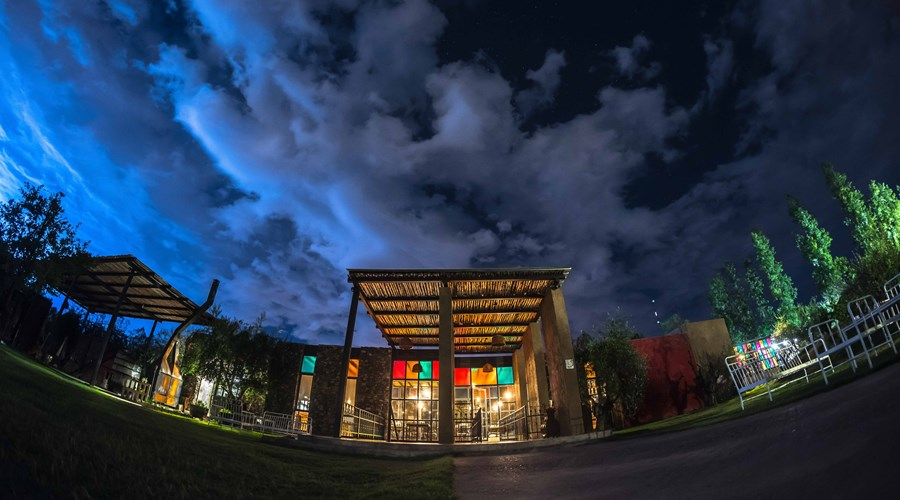
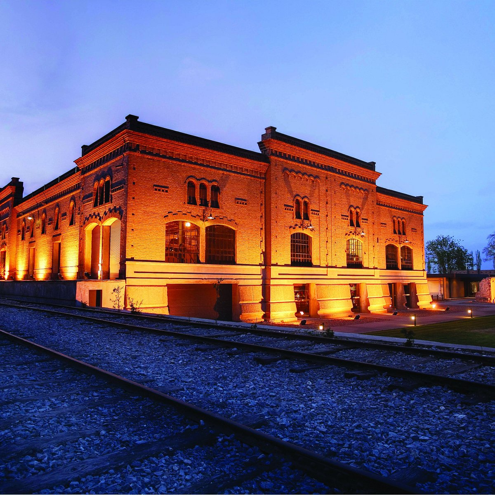
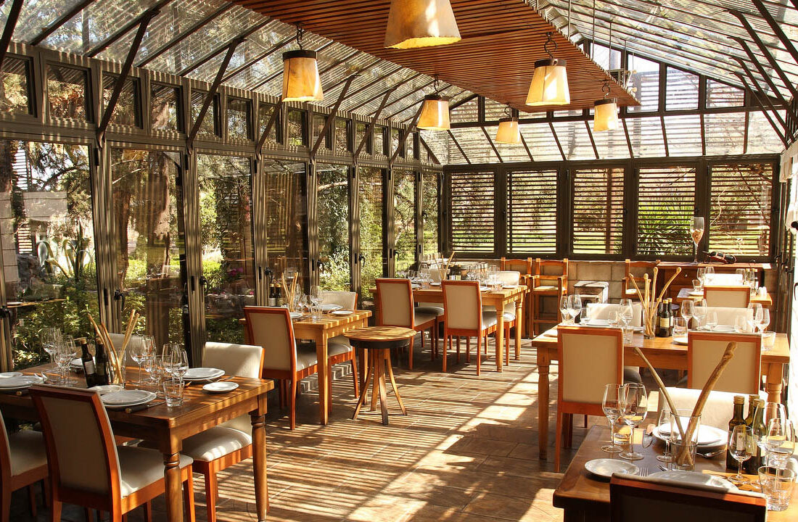
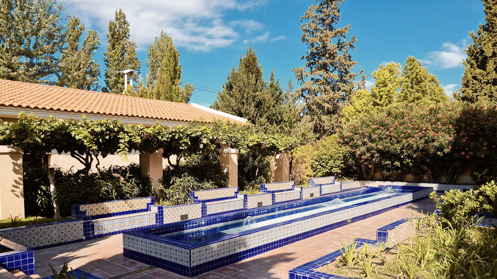

MAIPÚ

- Degustaciones y visitas por la bodega
- Blending game
- Restaurant con almuerzos y cenas
- Menú de 3 pasos
- Menú de 7 pasos
- Menú de 9 pasos
- menú de 14 pasos
- Eventos

- Restaurant "Espacio Trapiche"
- Estación 83
- Degustaciones y visitas

- Visitas
- Gastronomía
- Casa del Visitante
- Picnic en los jardines
- Actividades
- Bike & Tasting
- Classic Wine Tour
- Curso de degustación
- Vení a cosechar
- Vení a cocinar
- Vení a volar
- Malamado Bartender

- Degustaciones y visitas guiadas
- Restaurant "Casa Agostino"

- Restaurant "Argentia Bistró"
- Visitas y degustaciones
- Eventos